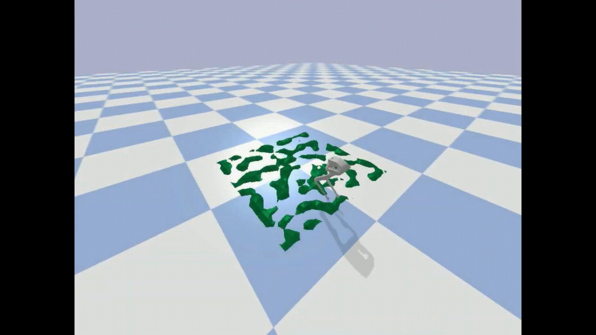

Download
Abstract
In this paper, we propose a novel framework capable of generating various walking and running gaits for bipedal robots. The main goal is to relax the fixed center of mass (CoM) height assumption of the linear inverted pendulum model (LIPM) and generate a wider range of walking and running motions, without a considerable increase in complexity. To do so, we use the concept of virtual constraints in the centroidal space which enables generating motions beyond walking while keeping the complexity at a minimum. By a proper choice of these virtual constraints, we show that we can generate different types of walking and running motions. More importantly, enforcing the virtual constraints through feedback renders the dynamics linear and enables us to design a feedback control mechanism which adapts the next step location and timing in face of disturbances, through a simple quadratic program (QP). To show the effectiveness of this framework, we showcase different walking and running simulations of the biped robot Bolt in the presence of both environmental uncertainties and external disturbances.
Video: Walking gate

Citation
M. G. Boroujeni, E. Daneshman, L. Righetti and M. Khadiv, “A unified framework for walking and running of bipedal robots,” 2021 20th International Conference on Advanced Robotics (ICAR), Ljubljana, Slovenia, 2021, pp. 396-403, doi: 10.1109/ICAR53236.2021.9659392.
@INPROCEEDINGS{9659392,
author={Boroujeni, Mahrokh Ghoddousi and Daneshman, Elham and Righetti, Ludovic and Khadiv, Majid},
booktitle={2021 20th International Conference on Advanced Robotics (ICAR)},
title={A unified framework for walking and running of bipedal robots},
year={2021},
volume={},
number={},
pages={396-403},
keywords={Legged locomotion;Adaptation models;Uncertainty;Dynamics;Fasteners;Complexity theory;Timing},
doi={10.1109/ICAR53236.2021.9659392}}